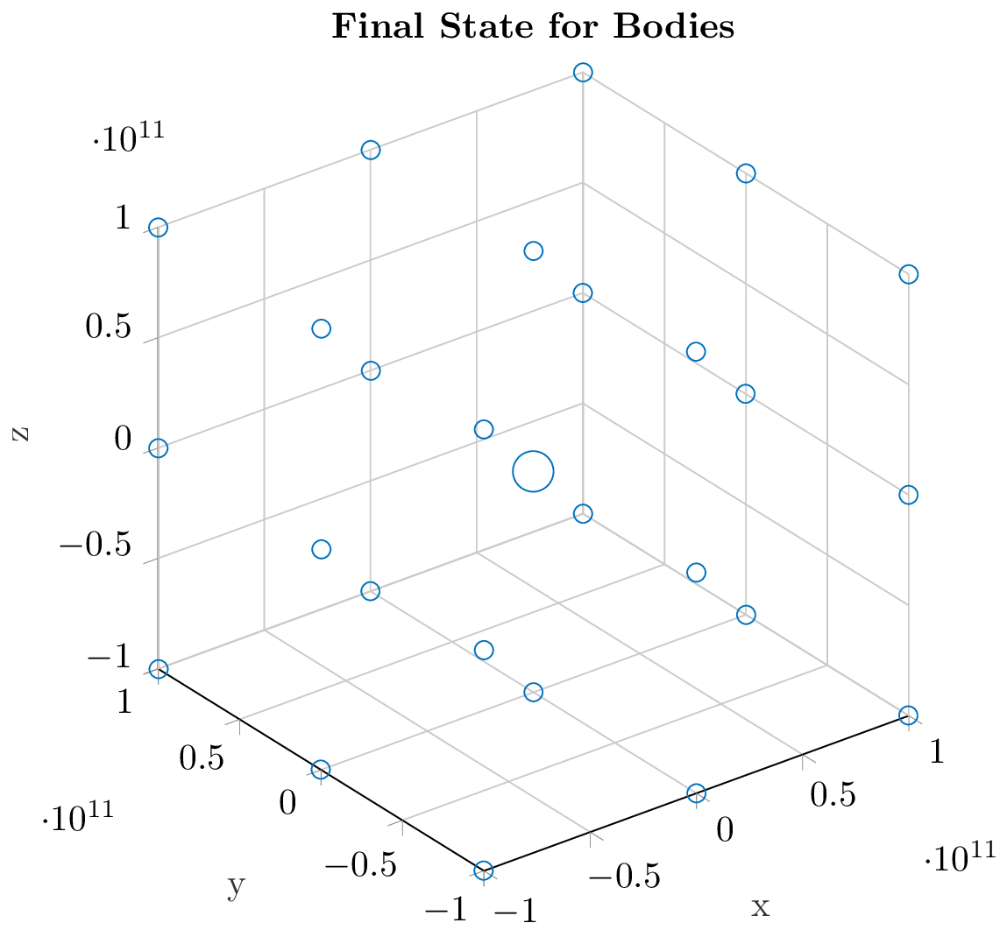

\documentclass{standalone}
\usepackage{pgfplots}
\pgfplotsset{compat=newest}
%% the following commands are needed for some matlab2tikz features
\usetikzlibrary{plotmarks}
\usetikzlibrary{arrows.meta}
\usepgfplotslibrary{patchplots}
\usepackage{grffile}
\usepackage{amsmath}
%% you may also want the following commands
%\pgfplotsset{plot coordinates/math parser=false}
%\newlength\figureheight
%\newlength\figurewidth
\definecolor{mycolor1}{rgb}{0.00000,0.44700,0.74100}
\begin{document}
\begin{tikzpicture}
\begin{axis}[%
width=2.856in,
height=3.04in,
at={(0.532in,0.41in)},
scale only axis,
xmin=-100000000000,
xmax=100000000000,
tick align=outside,
xlabel style={font=\color{white!15!black}},
xlabel={x},
ymin=-100099789790,
ymax=100221383780,
ylabel style={font=\color{white!15!black}},
ylabel={y},
zmin=-100000000000,
zmax=100000000000,
zlabel style={font=\color{white!15!black}},
zlabel={z},
view={-37.5}{30},
axis background/.style={fill=white},
title style={font=\bfseries},
title={Final State for Bodies},
axis x line*=bottom,
axis y line*=left,
axis z line*=left,
xmajorgrids,
ymajorgrids,
zmajorgrids,
legend style={at={(1.03,1)}, anchor=north west, legend cell align=left, align=left, draw=white!15!black}
]
\addplot3[scatter, only marks, mark=o, color=mycolor1, mark options={}, scatter/use mapped color=mycolor1, visualization depends on={\thisrow{size} \as \perpointmarksize}, scatter/@pre marker code/.append style={/tikz/mark size=\perpointmarksize}] table[row sep=crcr]{%
x y z size\\
-99997680035 -99855857673 -99997638019 2.53722289127305\\
-99995820981 -100078368310 -58635.022346 2.53722289127305\\
-99997695110 -100009034110 99997623812 2.51246890528022\\
-99995843643 226503275.05 -99995779505 2.52487623459052\\
-99988412223 -179555862.51 -32819.532687 2.52487623459052\\
-99995844851 -181718398.34 99995769983 2.5\\
-99997702127 99812198113 -99997628815 2.51246890528022\\
-99995834363 100002281340 28394.932892 2.53722289127305\\
-99997688220 100066622950 99997631716 2.52487623459052\\
-38982.610169 -100099789790 -99995805526 2.52487623459052\\
-48117.853869 -100038411320 -32185.880326 2.52487623459052\\
24109.366574 -99841676469 99995788472 2.51246890528022\\
11726.151807 12985306.256 -99988385554 2.51246890528022\\
-28519.319386 195477542.09 -15684.045798 5.59016994374947\\
27742.353864 -21179197.996 99988377381 2.51246890528022\\
8934.5609253 100197328670 -99995811305 2.51246890528022\\
-45136.404472 99925853996 17134.979224 2.51246890528022\\
-37145.860615 100011674450 99995806820 2.52487623459052\\
99997669088 -99781825884 -99997684828 2.52487623459052\\
99995807964 -99925688910 4436.776345 2.51246890528022\\
99997695013 -100027683570 99997681472 2.52487623459052\\
99995838034 -135798071.12 -99995820437 2.53722289127305\\
99988403193 228679228.99 -16782.459343 2.51246890528022\\
99995842575 -30315078.36 99995814229 2.52487623459052\\
99997700542 100089944940 -99997679122 2.52487623459052\\
99995828402 100221383780 -17685.690958 2.52487623459052\\
99997679305 100068347900 99997674675 2.51246890528022\\
};
\end{axis}
\end{tikzpicture}
\end{document}Created by David Li